| Melody Ellis
& Matt Wilt
American ceramic sculptors.

There a few remarkable husband-wife pairs making ceramics and pottery
in this world, e.g. Ursula & Karl Scheid (Germany), Otto &
Vivika Heino (USA), Ruth & Alan Barret-Danes (UK), Gertrud &
Otto Natzler (Germany), Margaret & David Frith (UK) and and
others. Some make work together, some individually. What they usually
all share is a studio and inspiration.
Melody Ellis & Matt Wilt are one such couple.
Melody Ellis
(http://www.melodyellisceramics.com)
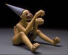Melody
Ellis studied in Britain at the Glasgow School of Art from 1991–92
and earned a BFA at the Tyler School of Art at Temple University,
Philadelphia in 1995. She was also an apprentice at the Moravian
Pottery and Tileworks in 1995 and the Fabric Workshop and Museum
in 1997, both in Pennsylvania. She was artist-in-residence at the
Watershed Center for the Ceramic Arts in 1996 and Visiting Artist
at the Sam Houston State University, Huntsville, Texas in 1999 and
2001.
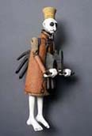
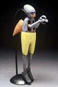
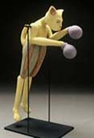
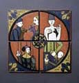Ellis
was awarded a First Prize at the Perry County Council of the Arts
Little Buffalo Juried Art Exhibit in Harrisburg, Pennsylvania in
1999 and an Arrowmont School of Arts and Crafts Pi Beta Phi Scholarship
in 2002. She makes narrative earthenware tile mosaics and jointed,
wall-hanging figurative sculptures with bright, layered surfaces,
drawing inspiration from childhood memories of antique dolls, hand
made wooden toys, and other curiosities from the past. - Artist's
Statement.
Matt Wilt
(http://www.siue.edu/ART/faculty/wilt.html)
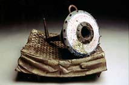Matt
Wilt earned a BS at Pennsylvania State University in 1991 and an
MFA at Ohio University at Athens in 1995. He taught at Sam Houston
State University, Huntsville, Texas from 1999–2001 and has
been a faculty member at Southern Illinois University, Edwardsville,
since 2002.
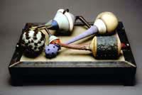
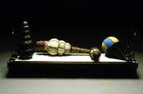
He has received several awards, including a Pennsylvania Council
on the Arts Fellowship in 1997 and the Evelyn Shapiro Foundation
Fellowship for a one year residency at The Clay Studio in Philadelphia
in 1996.
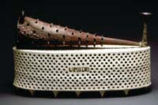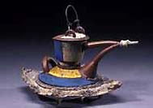
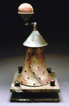Wilt
makes narrative sculpture with additions of nails, melted steel,
fibreglass and wire. His ceramic arrangements typically incorporate
found objects that have been remade and hybridised with other forms
in various still life settings.
Images courtesy Ellis Melody & Matt Wilt. ©
The Artists
More Artists of the Week
More Articles
|
{kind=link}
{kind=link}
{kind=link}
{kind=link}
{kind=link}
{kind=link}